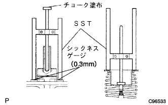
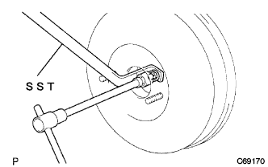

ブレーキ ブースタASSY 調整 |
| 1. ブレーキブースタプッシュロッド点検·調整 |
エンジン停止状態でブレーキペダルを数回踏み、ブレーキブースタ内の負圧を抜く。
|  |
シツクネスゲージ(0.3mm)を介して、SSTをマスタシリンダに当てる。
SSTのロッドをマスタシリンダのピストンに軽く当て、固定する。
SSTのロッド平面にチヨークを塗布し、SSTを反転させてブレーキブースタASSYに取り付け、すき間を点検する。
|  |
基準値外の場合はSSTを使用してロツドを固定し、ボツクスレンチ(7mm)を使用してロツド先端を回し、長さを調整する。
さらにボックスレンチ(7mm)を0.5回転(180°)回転させ、ロッド先端を0.5mm奥へ押し込む。(VSCなし車)
| 車両型式 | フレームNo. |
|---|---|
| NNP10-AGSGK | 0017402以降 |
| NNP11-AGSGK | 0019648以降 |